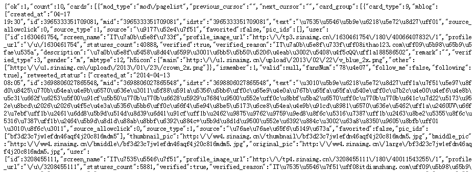

小喵的唠叨话：由于项目需要（其实是个小兼职），需要抓取新浪微博的用户的微博数据。小喵在努力研究了一晚上之后，初步掌握的抓取的方法。所谓聪明的喵不吃独食，特来与大家分享。作为小喵的第一篇博客，小喵努力写了很久，如果写作上有什么不清晰的地方，也欢迎大家指正。
一、分析新浪微博的网页
这里选择手机版的新浪微博，即：http://m.weibo.cn。原因如下：手机版的微博内容和电脑版的一样，但是信息比较直接，并且手机网页的验证等操作也要较电脑版简单。故为了便于分析，选择手机微博是一个明智的选择。
登录进微博，随便打开一个关注的微博，查看其主页网址（例如：http://m.weibo.cn/u/1630461754）。
对比可以分析出：
- 每个用户应该有唯一的网址（当然有的用户有自己的个性域名），而这个网址的最后面的数字很可能是用户的唯一标示。（在后面，我们也验证了该数字确实是用户的uid）
- 所有的微博主页都是以
http://m.weibo.cn/u/{uid}的形式（这不绝对，因为实验中确实发现的别的类型的网址，但大多数都是这个样子）。
之后，主页中只会显示用户的最新微博信息，这并不是我们期望的。我们点击"查看更多微博"，这样跳转到一个只有微博的页面。
具体含义我们暂时不需要理解。
别走开，真正的黑科技要出现了。通过滚动页面，可以发现，页面在动态加载。看来为了用户体验，微博做了很多功夫。学习过一段时间的网页开发的同学都应该知道，网页不刷新，内容却发生改变，这很可能是使用Ajax技术。通过Ajax，对额外的微博数据进行加载，之后通过Dom操作，追加到页面的微博数据的最下面。
从上面的分析可知，如果我们能够查询到追加的数据的获取方式，就很可能实现微博内容的获取。
这里介绍一个常用的分析方法。打开chrome的控制台（事实上，firefox，IE都支持这个功能），在network下，查看数据加载情况。这里建议清空所有数据，然后滚动屏幕，这样很容易就能获得最新加载的数据了。
这里是我的截图：
很容易注意到名为json的这个数据包。复制并打开他的连接。这时候在浏览器中，出现了许多乱七八糟的东西 （这里的网址是：http://m.weibo.cn/page/json?containerid=1005051630461754_-\_WEIBO\_SECOND\_PROFILE\_WEIBO&page=3）。这时候需要我们仔细辨认，你会发现，除了文字很奇怪之外，其他的东西，很明显包含了我们需要的东西。

对！这就是我们所期望的！Ajax动态加载的数据！
对这个url做简单的实验和分析。可以知道：
http://m.weibo.cn/page/json，这是数据的请求源，是固定的。用来区分资源的是后面的参数。containerid=1005051630461754_-\_WEIBO\_SECOND\_PROFILE\_WEIBO，这个形式也是几乎不变的。1005051630461754这个用来标志用户，试验了几次之后，我才发现了其中的规律：1005051630461754 = 100505 + uid！也就是说，只要知道用户的uid，很容易构造这个字段。page=3，明显用来表示请求的微博的页面。试了一下，如果把参数设为1，就是最新的微博的数据。聪明的你一定想到了通过改变page的数值，就可以轻松地抓取用户的所有微博！
总结，我们知道，通过访问http://m.weibo.cn/page/json?containerid=100505{uid}_-\_WEIBO\_SECOND\_PROFILE\_WEIBO&page={page_num}，就可以得到指定用户的指定页面的微博。
到此，我们简单的分析的微博的页面，并知道了数据的来源。之后便可以较为顺利的爬取用户的数据了。
但是，难道到这里就结束了吗？
不会这么简单。程序员的本质就是将一切做到极致。
二、获得用户的uid
为了更机械化的抓取用户数据，我们可以将获取uid的任务，也编程实现。这里主要用三种方法：
- 知道用户的主页地址，比如：http://m.weibo.cn/u/1630461754，可以直接得到
uid。 - 知道用户的昵称，通过新浪的api，http://open.weibo.com/wiki/2/users/show，可以获取用户的数据，包括
uid。 - 知道用户的个性域名，通过新浪的api，http://open.weibo.com/wiki/2/users/domain_show，即可获取。
新浪的api需要，自己创建应用，然后授权等等。可以参考新浪微博官网的文档http://open.weibo.com/wiki/微博API，这里不再累述。
三、数据抓取解析
数据的抓取可以使用任意的支持HTTP通信的语言，注意抓取的频率就好，太快了可能会被系统认识到是爬虫 虽然我们确实是 ，建议至少间隔1~2s。前面两步得到的数据都是JSON格式的，JSON（JavaScript Object Notation）是一种由轻量级的数据交换语言。基本上每种语言都对JSON有很好的支持。因此只要对JSON稍作了解，都可以快速解析。可以查看wiki的相关介绍：https://zh.wikipedia.org/wiki/JSON。
以上，便是微博的数据的抓取思路。这里仅供参考。有许多东西理解的可能还不够透彻。比如：100505是怎么来的，获取uid的没考虑到的情况（这个确实碰到了一个，但是暂时还没有研究）等等，如果以后有新的发现，一定会再次补充。
最后，转载请注明出处。
欢迎转载和分享~